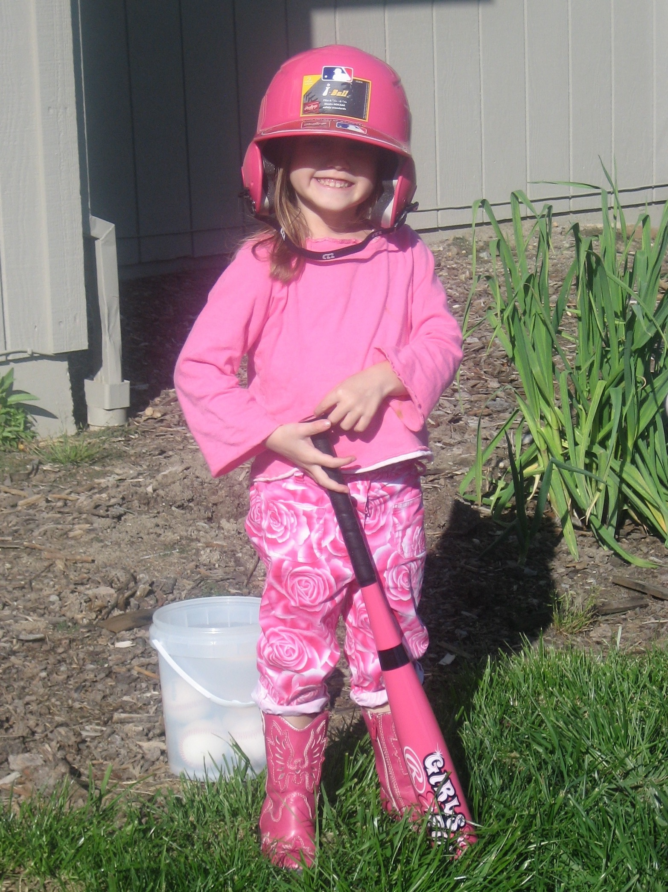

Name: Ava Lord
Height: 5’3
Age: 20
Avid Yelp User
Ice Tea Drinker
Nature Lover.
Didn't turn out to be a baseball player
but would have looked good doing it.
Ava Lord is a graphic designer, working in mixed medias. She has
created work through adobe platforms including InDesign, Illustrator,
and Photoshop. Her work varies from editorial and infographics to illustrative
design.
Inspired by the fluidity of digital art and its unlimited boundaries
for creation. She enjoys the limitless boundaries for graphic art, leaving lot
of room for experimenting and exploring different mediums. I am currently employed
at the SF Foghorn as the Layout Editor, a weekly newspaper. My strengths include the
ability thrift old graphic content and elevate it to have a new meaning. She creates
various styles of graphic design, from intricate detailed work to abstract expressionism.
She is eager to strengthen her technique and is open to any opportunity that presents
itself.